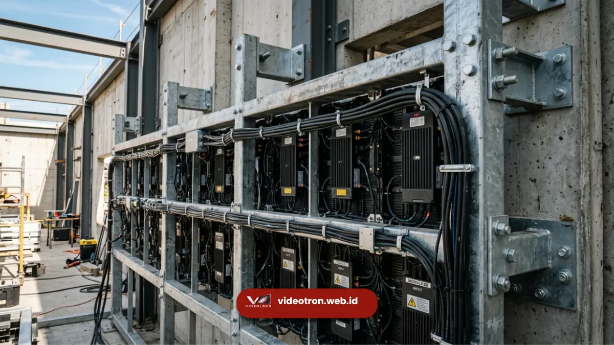

Supplier videotron Jakarta adalah penyedia jasa pengadaan, instalasi, dan perawatan layar LED skala besar untuk kebutuhan iklan, event, dan gedung korporat di wilayah Jakarta dan sekitarnya.
Vendor videotron adalah penyedia jasa pengadaan, sewa, dan instalasi layar LED besar untuk kebutuhan promosi, informasi publik, atau acara korporat. Layanan ini mencakup konsultasi desain, penyediaan perangkat, instalasi, hingga perawatan videotron secara menyeluruh.
Poin Penting:
- Vendor videotron menyediakan layanan sewa maupun jual videotron indoor dan outdoor.
- Layanan mencakup survei lokasi, desain konten, instalasi, dan maintenance.
- Cocok untuk kebutuhan korporat, instansi pemerintah, event, dan promosi bisnis.
- Pemilihan vendor yang tepat memengaruhi kualitas gambar, daya tahan, dan efisiensi biaya jangka panjang.
- Konsultasi awal membantu menentukan spesifikasi videotron sesuai kebutuhan dan anggaran.
Ketika sebuah instansi atau perusahaan membutuhkan media promosi berskala besar, videotron menjadi pilihan yang semakin populer karena visibilitasnya yang tinggi di ruang publik.
Namun, hasil akhir sangat bergantung pada vendor yang menangani proyek tersebut, mulai dari kualitas panel LED yang digunakan hingga ketepatan proses instalasi. Panduan ini membahas secara menyeluruh apa itu vendor videotron, layanan yang biasa ditawarkan, faktor yang memengaruhi biaya, serta tahapan kerja sama yang umum berlaku di industri ini.
- 1. Apa Itu Vendor Videotron?
- 2. Layanan Apa Saja yang Disediakan Vendor Videotron?
- 3. Berapa Kisaran Biaya Kerja Sama dengan Vendor Videotron?
- 4. Bagaimana Tahapan Kerja Sama dengan Vendor Videotron?
- 5. Apa Saja Spesifikasi Teknis yang Perlu Diperhatikan?
- 6. Mengapa Memilih Vendor yang Tepat Itu Penting?
- 7. Kesalahan Umum dalam Memilih Vendor Videotron
Apa Itu Vendor Videotron?
Vendor videotron adalah perusahaan atau penyedia jasa yang menangani pengadaan, penyewaan, instalasi, dan perawatan layar videotron LED untuk berbagai kebutuhan klien. Vendor videotron biasanya menyediakan layanan end-to-end, mulai dari konsultasi kebutuhan hingga dukungan purnajual.
Videotron sendiri adalah layar besar berbasis panel LED yang digunakan untuk menampilkan gambar, video, atau informasi secara dinamis di ruang terbuka maupun tertutup.
Videotron banyak digunakan untuk iklan luar ruang, informasi publik di gedung pemerintahan, backdrop panggung acara korporat, hingga media promosi di pusat perbelanjaan.
Sebagai penyedia jasa, vendor videotron umumnya memiliki tanggung jawab pada beberapa aspek utama, yaitu penyediaan unit videotron sesuai spesifikasi, proses instalasi yang aman dan sesuai standar teknis, konfigurasi sistem kontrol konten, serta layanan perawatan berkala agar videotron tetap berfungsi optimal dalam jangka panjang.
Layanan Apa Saja yang Disediakan Vendor Videotron?
Vendor videotron profesional umumnya menawarkan layanan lengkap mulai dari konsultasi kebutuhan, penyediaan unit, instalasi, hingga perawatan rutin pasca pemasangan. Beberapa layanan utama yang biasa ditawarkan oleh vendor videotron antara lain sebagai berikut.
Konsultasi dan Survei Lokasi
Tahap awal kerja sama biasanya diawali dengan konsultasi kebutuhan klien, termasuk tujuan penggunaan videotron, lokasi pemasangan, serta anggaran yang tersedia. Survei lokasi dilakukan untuk memastikan kondisi struktur bangunan, ketersediaan daya listrik, serta jarak pandang ideal audiens terhadap layar.
Penyediaan Unit Videotron Indoor dan Outdoor
Vendor videotron biasanya menyediakan dua kategori utama produk, yaitu videotron indoor untuk penggunaan di dalam ruangan seperti lobi gedung atau ruang pertemuan. Serta videotron outdoor yang dirancang tahan cuaca untuk pemasangan di area terbuka seperti fasad gedung atau lapangan.
Instalasi dan Rigging
Proses instalasi videotron memerlukan keahlian teknis, terutama untuk pemasangan berskala besar yang melibatkan struktur rangka, sistem kelistrikan, serta pengaturan modul panel agar tampilan gambar terlihat rapi tanpa garis pemisah yang mengganggu.
Sewa Videotron untuk Kebutuhan Event
Selain pemasangan permanen, banyak vendor videotron juga menyediakan layanan sewa untuk kebutuhan jangka pendek seperti seminar, konser, peluncuran produk, atau kegiatan seremonial instansi pemerintah.
Maintenance dan Dukungan Teknis
Layanan purnajual seperti pemeliharaan rutin, penggantian modul yang rusak, serta dukungan teknis menjadi bagian penting agar videotron tetap berfungsi optimal dalam jangka panjang.
Untuk kebutuhan pengadaan videotron korporat maupun instansi, tim vendorvideotron.web.id siap membantu mulai dari konsultasi awal hingga instalasi selesai dengan standar kerja profesional.

Proses instalasi videotron memerlukan keahlian teknis agar tampilan gambar terlihat rapi.Berapa Kisaran Biaya Kerja Sama dengan Vendor Videotron?
Biaya kerja sama dengan vendor videotron bervariasi tergantung ukuran layar, spesifikasi teknis, lokasi pemasangan, serta apakah proyek bersifat sewa jangka pendek atau instalasi permanen jangka panjang.
Beberapa faktor yang secara umum memengaruhi besaran biaya antara lain luas area layar yang dibutuhkan, tingkat kerapatan pixel atau pixel pitch yang menentukan ketajaman gambar, jenis videotron indoor atau outdoor,kompleksitas instalasi termasuk kebutuhan rangka struktur tambahan, serta durasi kerja sama jika berupa sewa.
Karena variabel ini berbeda pada setiap proyek, estimasi biaya yang akurat sebaiknya diperoleh melalui konsultasi langsung dengan tim vendor berdasarkan kebutuhan spesifik klien.
Pembahasan lebih rinci mengenai faktor-faktor yang memengaruhi harga videotron dapat dibaca pada artikel terkait di bagian bawah halaman ini.
Bagaimana Tahapan Kerja Sama dengan Vendor Videotron?
Tahapan kerja sama dengan vendor videotron umumnya meliputi konsultasi awal, survei lokasi, penawaran teknis, proses instalasi, hingga serah terima dan dukungan purnajual.
Secara umum, alur kerja sama dapat dijabarkan sebagai berikut.
- Konsultasi kebutuhan, di mana klien menjelaskan tujuan penggunaan videotron, target lokasi, dan estimasi anggaran.
- Survei lokasi untuk memastikan kelayakan struktur, ketersediaan daya listrik, dan jarak pandang optimal.
- Penawaran teknis berupa spesifikasi videotron yang direkomendasikan beserta estimasi biaya.
- Persetujuan dan penjadwalan proyek sesuai kesepakatan kedua pihak.
- Proses instalasi yang dilakukan oleh tim teknis berpengalaman.
- Uji coba sistem dan konten sebelum serah terima.
- Dukungan purnajual berupa maintenance dan layanan teknis berkelanjutan.
Penjelasan lebih lengkap mengenai tahapan kerja sama pengadaan videotron, mulai dari survei hingga instalasi, dapat ditemukan pada artikel cluster terkait di bawah.
Apa Saja Spesifikasi Teknis yang Perlu Diperhatikan?
Spesifikasi teknis videotron yang perlu diperhatikan meliputi pixel pitch, tingkat kecerahan atau brightness, ketahanan terhadap cuaca, serta refresh rate layar.
Pixel pitch menentukan jarak antar titik LED yang berpengaruh pada ketajaman gambar dari jarak tertentu.
Tingkat kecerahan penting terutama untuk videotron outdoor agar gambar tetap terlihat jelas di bawah sinar matahari langsung. Ketahanan terhadap cuaca, seperti sertifikasi IP rating, menentukan seberapa baik unit videotron bertahan dari hujan dan kelembapan.
Pembahasan lebih mendalam mengenai spesifikasi teknis ini tersedia pada artikel cluster terkait di bagian bawah halaman.
Mengapa Memilih Vendor yang Tepat Itu Penting?
Memilih vendor videotron yang tepat memengaruhi kualitas tampilan gambar, keamanan instalasi, serta efisiensi biaya perawatan dalam jangka panjang.
Videotron yang dipasang oleh tim yang kurang berpengalaman berisiko mengalami masalah seperti tampilan gambar tidak merata, instalasi yang kurang aman secara struktural, hingga biaya perawatan yang membengkak akibat kerusakan dini.
Oleh karena itu, kerja sama dengan vendor yang memiliki rekam jejak dan tim teknis kompeten menjadi faktor penting dalam memastikan hasil akhir yang sesuai ekspektasi.
Tim vendorvideotron.web.id berkomitmen memberikan layanan pengadaan videotron yang transparan, mulai dari konsultasi kebutuhan hingga dukungan teknis setelah instalasi selesai.
Kesalahan Umum dalam Memilih Vendor Videotron
Beberapa kesalahan umum yang sering terjadi antara lain tidak melakukan survei lokasi sebelum menentukan spesifikasi, mengabaikan aspek ketahanan cuaca untuk pemasangan outdoor, serta tidak memperhitungkan kebutuhan maintenance jangka panjang.
Kesalahan lain yang cukup sering ditemui adalah menentukan anggaran tanpa memahami variabel yang memengaruhi biaya, seperti ukuran layar dan tingkat kerapatan pixel, sehingga estimasi awal sering meleset dari kebutuhan aktual di lapangan.
Vendor videotron berperan penting dalam memastikan keberhasilan proyek pengadaan layar LED, mulai dari tahap konsultasi, survei lokasi, instalasi, hingga perawatan jangka panjang. Pemilihan vendor yang berpengalaman dan transparan akan membantu klien mendapatkan hasil optimal sesuai kebutuhan dan anggaran yang tersedia.
Jika Anda sedang mempertimbangkan pengadaan atau sewa videotron untuk kebutuhan korporat maupun instansi, konsultasikan kebutuhan Anda bersama tim vendorvideotron.web.id agar mendapatkan rekomendasi spesifikasi dan estimasi biaya yang sesuai.

Hawa Nadira
LED Technology Consultant dan Visual Educator
Konsultan dan spesialis solusi display digital berdedikasi tinggi yang fokus membagikan panduan edukatif mengenai penerapan teknologi layar LED videotron untuk kebutuhan interior modern di Indonesia.